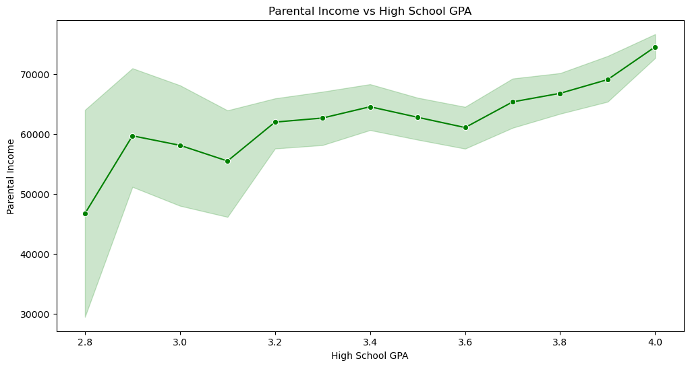
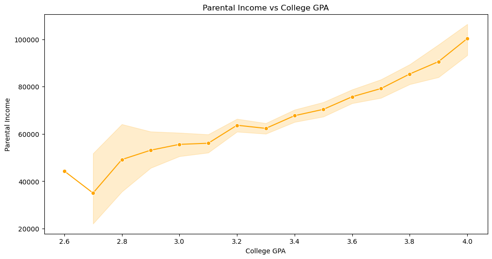
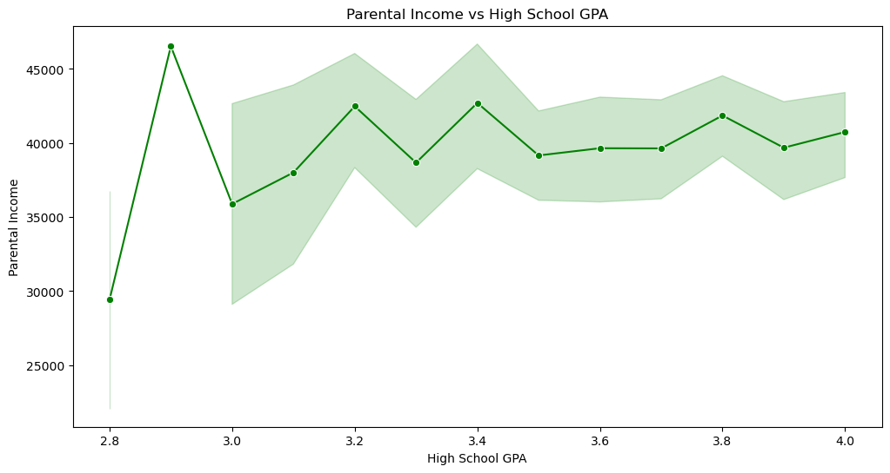
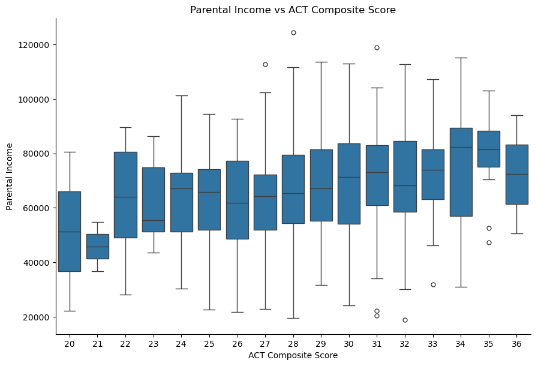
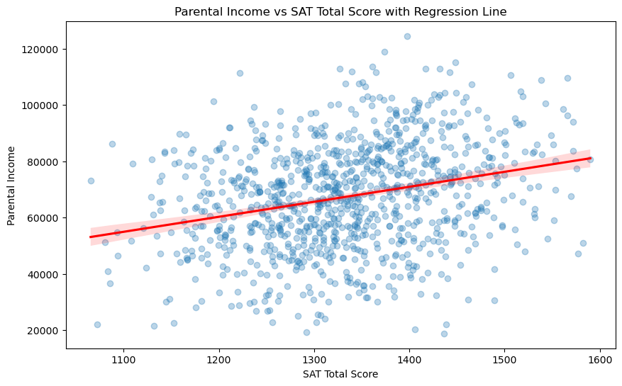

How Family Income Affects Academics
A project exploring the correlation between parental income and student academic performance..
Does Higher Family Income Result in Better Grades?
Course: Visual Analytics · Family Income Python
Audience & Intent
Have you ever wondered if family income was an academic privilege? As in, does a family that make more money result in children who do better academically? The thing is, we do hear about those who struggle growing up yet turning it all around, and they are amazing stories. But if families who make more do succeed more often, then how feasible is it for those who don't make much? How much harder is it? Well, let's take a look.
Income vs High School GPA
Here we can see parental income vs high school GPA. You can easily notice that there is an upward trend for GPA for those whose family makes more money. However those are the averages. You can see the max and min incomes by looking at the shaded area. There are plenty of kids whose family make $70k yet have ~2.9 GPAs. That being said, more students do better with more family income. Well, we looked at high school, so what about college?
Income vs College GPA
This makes it clear, you can notice a way steeper trend upwards, as one's family makes more money, the student does better. This is likely due to college requiring more financing, as you have to purchase textbooks, housing, car, transportation, and bills. People who don't need to work will have more time on their hand and less stress. Okay, so it seems clear that more money equals easier school life. What if we look at those who don't make as much, such as families who make less than $50k?
Sub $50k Income vs High School GPA
Notice how there is no constant upward trend? Seems like families who make less than $50,0000 a year are on a relatively more even scale. And of course we see that students can still perform well, but the distribution is a lot more flat with small hills. Lets look at ACTs as well.
Income vs ACT
Above we can again see a consistent but not so steep upwards trend in ACT scores and family income. So although it is upwards, it is not that much, meaning many people can still do well even if their family makes more money, however, money helps! Lastly, lets look at a regression line for SAT scores and parental income.
Income vs SAT
Above we can see so many dots that it makes it hard to see anything. If anything, it looks like theres no correlation. However, with the regression line, we can see a slight upwards trend. This means that it isn't that strong, but there is a positive correlation with income and SAT scores.
Conclusion
So what did we learn? Well, it seems clear to me that family income correlates with academic performance. Of course, it's shown that you can still fail or succeed no matter how much your parents make. But overall, money is a privilege, and money suggests less stress, less worries, less bills and fees that college students need to worry about, likely guanranteed transportation and room, and even tutoring or better schooling. So although anyone can succeed no matter their background, we should try to be understanding with other people, and especially understand that it make take more time for people who were not fortunate growing up!
Access
Click here to view this project on GitHub (the HTML): GitHub Repository Click here to view this dashboard on Tableau: Tableau Public Link Click here to view the dataset on Kaggle: Kaggle Dataset Link